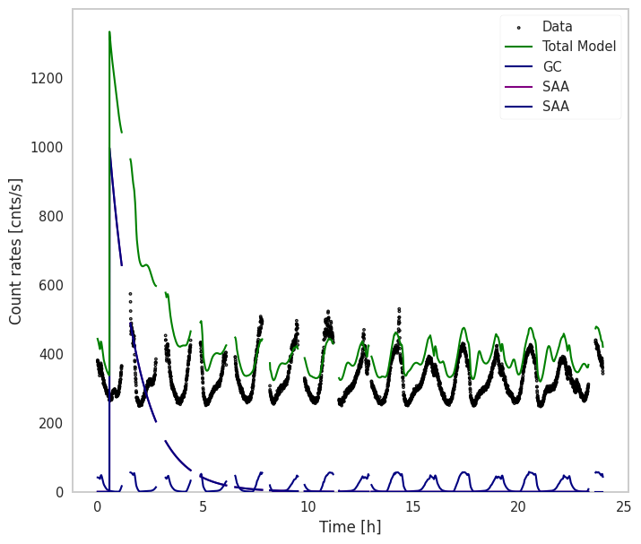

Setup for GBM#
Imports#
[1]:
%matplotlib inline
import numpy as np
import matplotlib.pyplot as plt
from jupyterthemes import jtplot
jtplot.style(context="notebook", fscale=1, grid=False)
from astromodels import Powerlaw, Exponential_cutoff, Constant, Band
from astromodels.utils.configuration import astromodels_config
astromodels_config.modeling.ignore_parameter_bounds = True
from gbmbkgpy.modeling.new_astromodels import SBPL
from gbmbkgpy.data.gbm_data import GBMData
from gbmbkgpy.geometry.gbm_geometry import GBMGeometryPosHist
from gbmbkgpy.response.gbm_response import GBMResponseGenerator
from gbmbkgpy.response.response_precalculation import ResponsePrecalculation
from gbmbkgpy.response.src_response import EarthResponse, CGBResponse, GalacticCenterResponse, PointSourceResponse
from gbmbkgpy.modeling.source import PhotonSourceFixed, SAASource, NormOnlySource
from gbmbkgpy.modeling.functions import AstromodelFunctionVector
from gbmbkgpy.modeling.model import ModelDet
from gbmbkgpy.io.plotting.plot import plot_lightcurve
13:01:12 WARNING The naima package is not available. Models that depend on it will not be functions.py:48 available
WARNING The GSL library or the pygsl wrapper cannot be loaded. Models that depend on it functions.py:69 will not be available.
WARNING The ebltable package is not available. Models that depend on it will not be absorption.py:33 available
WARNING We have set the min_value of K to 1e-99 because there was a postive transform parameter.py:704
WARNING We have set the min_value of K to 1e-99 because there was a postive transform parameter.py:704
WARNING We have set the min_value of K to 1e-99 because there was a postive transform parameter.py:704
WARNING We have set the min_value of K to 1e-99 because there was a postive transform parameter.py:704
WARNING We have set the min_value of F to 1e-99 because there was a postive transform parameter.py:704
WARNING We have set the min_value of K to 1e-99 because there was a postive transform parameter.py:704
DATA#
[2]:
# get daily GBM data
gbmdata = GBMData(name="gbmn0",
date="200510",
data_type="ctime",
detector="n6",
echans=["1","2","3-5"])
# Rebin the data to 20 second bins
gbmdata.rebin_data(min_bin_width=20)
GEOMETRY#
[3]:
# init geometry object for Fermi/GBM at the given date
geom = GBMGeometryPosHist(date="200510")
Response#
[4]:
# General response Generator
drm_gen1 = GBMResponseGenerator(geometry=geom, det="n6", Ebins_in_edge=np.geomspace(10,2000, 101), data=gbmdata)
# Response precalculation for extended sources
rsp_pre1 = ResponsePrecalculation(drm_gen1, Ngrid=10000)
/opt/hostedtoolcache/Python/3.9.15/x64/lib/python3.9/site-packages/responsum-1.0.2-py3.9.egg/responsum/response.py:108: RuntimeWarning: Minimum MC energy (10.0) is larger than minimum EBOUNDS energy (5.307523250579834)
Responses for extended sources#
[5]:
# Time where to calculate the effective responses - linear interpolation in between
interp_time = np.linspace(gbmdata.time_bins[0,0], gbmdata.time_bins[-1,-1], 800)
# Galactic Center
gc_rsp = GalacticCenterResponse(geometry=geom, interp_times=interp_time, resp_prec=rsp_pre1)
# Earth Albedo
earth_rsp = EarthResponse(geometry=geom, interp_times=interp_time, resp_prec=rsp_pre1)
# CGB
cgb_rsp = CGBResponse(geometry=geom, interp_times=interp_time, resp_prec=rsp_pre1)
Response for point source#
[6]:
# Response for Crab
crab_rsp = PointSourceResponse(response_generator=drm_gen1, interp_times=interp_time, ra=83.633, dec=22.015)
Modelling#
Photon sources#
We use astromodels to define the spectra and combine this with the precalculated responses for the different sources.
[7]:
# A point source
# Define spectrum
pl_crab = Powerlaw()
pl_crab.K.value = 9.7
pl_crab.index.value = -2.1
# define source
crab = PhotonSourceFixed("Crab", pl_crab, crab_rsp)
# extended sources
#EARTH
earth_spec = SBPL()
earth_spec.K.value = 0.015
earth_spec.alpha.value = -5
earth_spec.beta.value = 1.72
earth_spec.xb.value = 33.7
earth = PhotonSourceFixed("Earth", earth_spec, earth_rsp)
#CGB
cgb_spec = SBPL()
cgb_spec.K.value = 0.11
cgb_spec.alpha.value = 1.32
cgb_spec.beta.value = 2.88
cgb_spec.xb.value = 30.0
cgb = PhotonSourceFixed("CGB", cgb_spec, cgb_rsp)
#GC
pl1_gc = Powerlaw()
pl1_gc.K.value = 0.08737610581967094
pl1_gc.index.value = -1.45
pl2_gc = Powerlaw()
pl2_gc.K.value = 252.3829377920772
pl2_gc.index.value = -2.9
exp_gc = Exponential_cutoff()
exp_gc.K.value = 0.1036025649336684
exp_gc.xc.value = 8
total = pl1_gc+pl2_gc+exp_gc
gc = PhotonSourceFixed("GC", total, gc_rsp)
SAA#
The de-excitation after an SAA transit is modelled as a simple exponential decay. But it is different for different energy channels and we have no info how to combine these. Therefore every energy channel gets an independent SAA Decay assigned.
[8]:
exp_decay = Exponential_cutoff()
exp_decay.K.value = 1000
exp_decay.xc.value = 5000
afv_saa = AstromodelFunctionVector(gbmdata.num_echan, base_function=exp_decay)
exit_time_saa = gbmdata.mean_time[100]
saa = SAASource("SAA", exit_time_saa, afv_saa)
Cosmic Rays#
Because we dont have a response for charged particles, we can not forward fold the signal due to the incoming Cosmic Rays. We therefore rely on good tracers of the effect. For GBM for example the McIlwain L-parameter seems to be a decent tracer. The time variablity is given by this tracer and only a total normalization (per energy channel) is fitted.
[9]:
c = Constant()
c.k.value = 100
afv_cr = AstromodelFunctionVector(gbmdata.num_echan, base_function=c)
cr = NormOnlySource("CR", geom.cr_tracer, afv_cr)
Create Model#
[10]:
model = ModelDet(gbmdata)
model.add_source(gc)
model.add_source(earth)
model.add_source(cgb)
model.add_source(crab)
model.add_source(saa)
model.add_source(cr)
Plot#
[11]:
ax = plot_lightcurve(model, eff_echan=0, model_component_list=["GC", "SAA"], model_component_colors=["navy", "purple"])
ax.legend()
[11]:
<matplotlib.legend.Legend at 0x7fa82ddc7400>

Generate new data from our model
[12]:
plt.scatter(gbmdata.mean_time, model.generate_counts()[:,0])
plt.xlabel("Time [s]")
plt.ylabel("Counts")
[12]:
Text(0, 0.5, 'Counts')